start: alinha os itens ao topo. 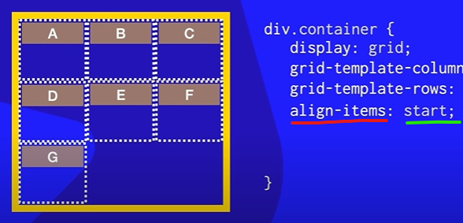
end: alinha os itens ao fundo. 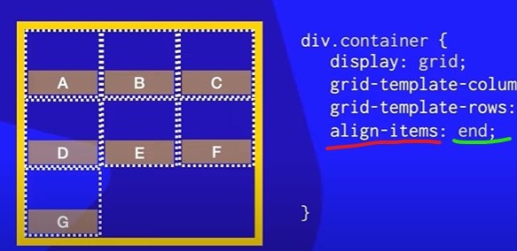
center: centraliza os itens verticalmente.

stretch: estica os itens para ocupar toda a altura da célula ou container (comportamento padrão). 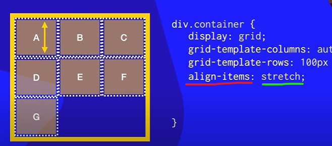
Alinha cada item do grid na vertical (dentro de sua célula) align-items: start | end | center | stretch;
start: alinha os itens ao topo.
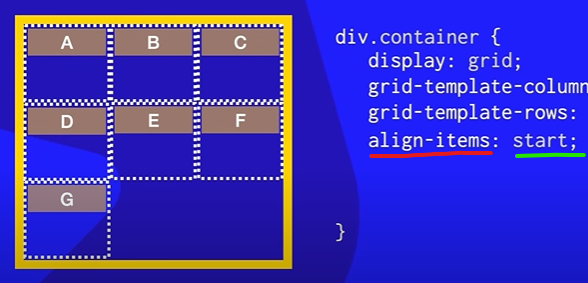
end: alinha os itens ao fundo.
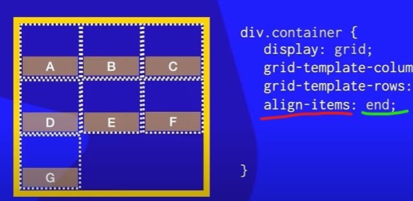
center: centraliza os itens verticalmente.
stretch: estica os itens para ocupar toda a altura da célula ou container (comportamento
padrão).
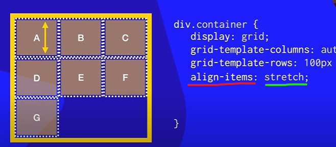
Alinha cada item do grid na horizontal (dentro de sua célula) justify-items: start | end | center | stretch;
start: alinha os itens à esquerda.
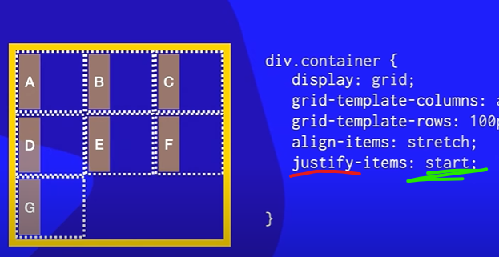
end: alinha os itens à direita.
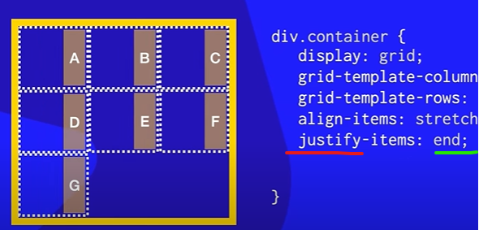
center: centraliza os itens horizontalmente.
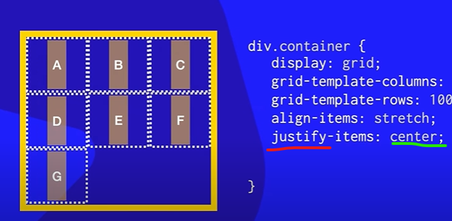
stretch: estica os itens para preencher todo o espaço disponível (valor padrão).
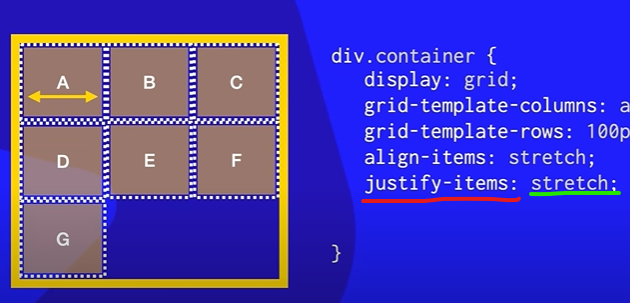
Alinha o grid inteiro na vertical (Cima p/ baixo) dentro do container. align-content: start | end | center | space-between |space-around | space-evenly;
start: (valor padrão) alinha os itens em cima (Valor Padrão).
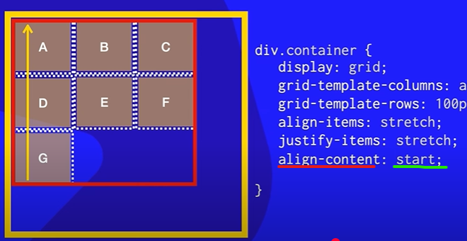
end: alinha os itenspara baixo final do conteiner.
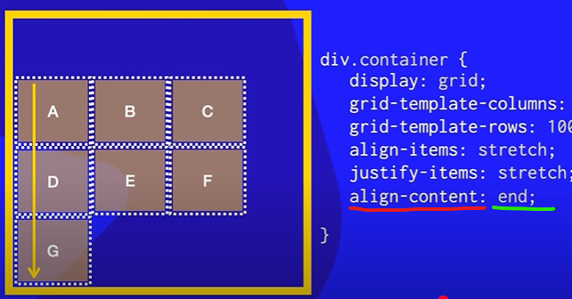
center: centraliza os itens horizontalmente.
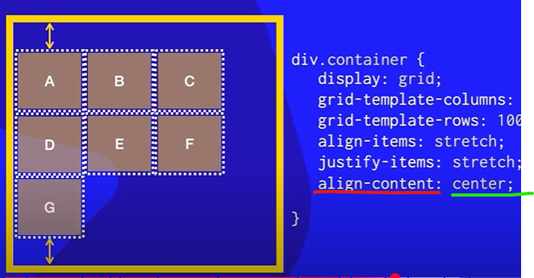
space-between: itens ficam com espaço igual entre eles, sem espaço nas bordas.
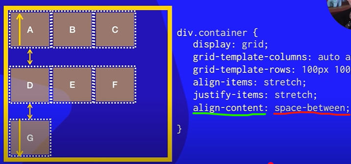
space-evenly: espaço igual entre todos os itens e as bordas.
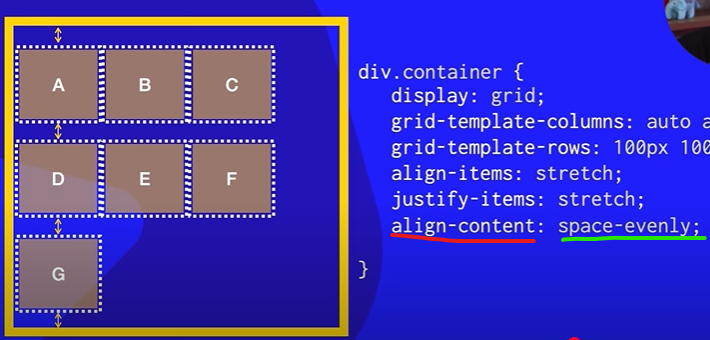
space-around: espaço igual nos dois lados de cada item.
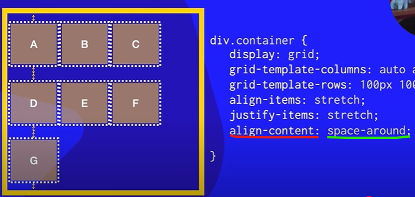
stretch: estica os itens para preencher todo o espaço disponível (valor padrão).
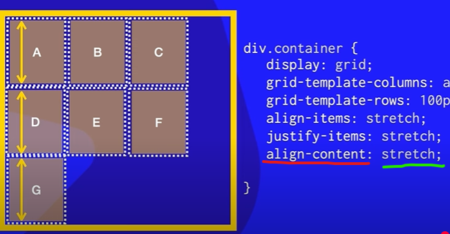
Alinha o grid inteiro na horizontal (esqueda p/ direita) dentro do container. justify-content: start | end | center | space-between | space-around | space-evenly;
start:(valor padrão) alinha os itens à esquerda.
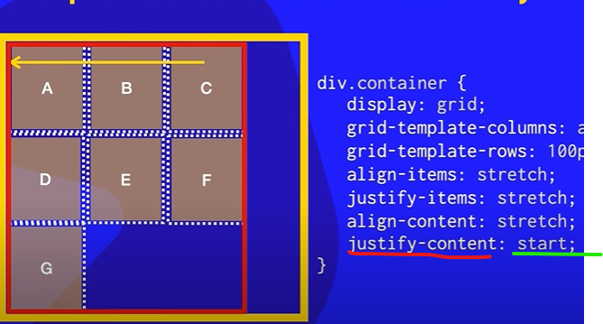
end: alinha os itens à direita.
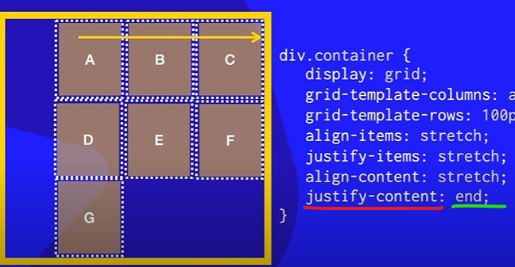
center: centraliza os itens horizontalmente.
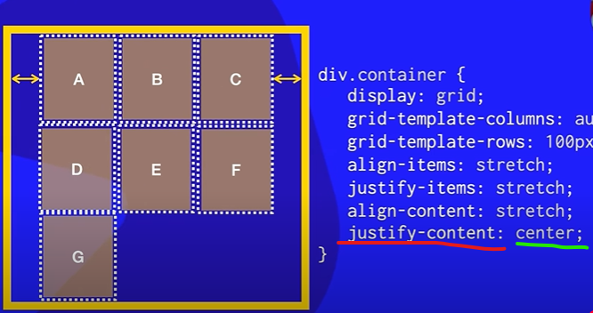
space-between: itens ficam com espaço igual entre eles, sem espaço nas bordas.
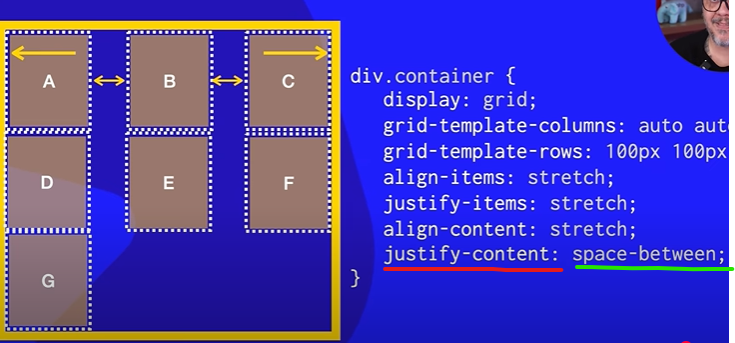
space-evenly: espaço igual entre todos os itens e as bordas.
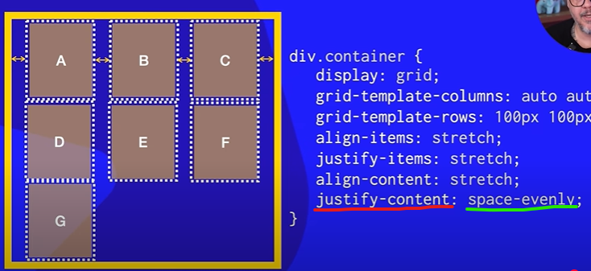
space-around: espaço igual nos dois lados de cada item.
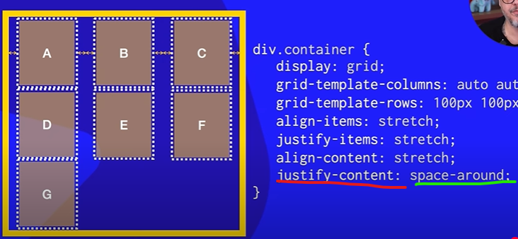
stretch: estica os itens para preencher todo o espaço disponível .
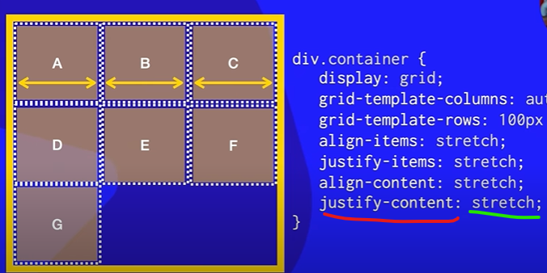